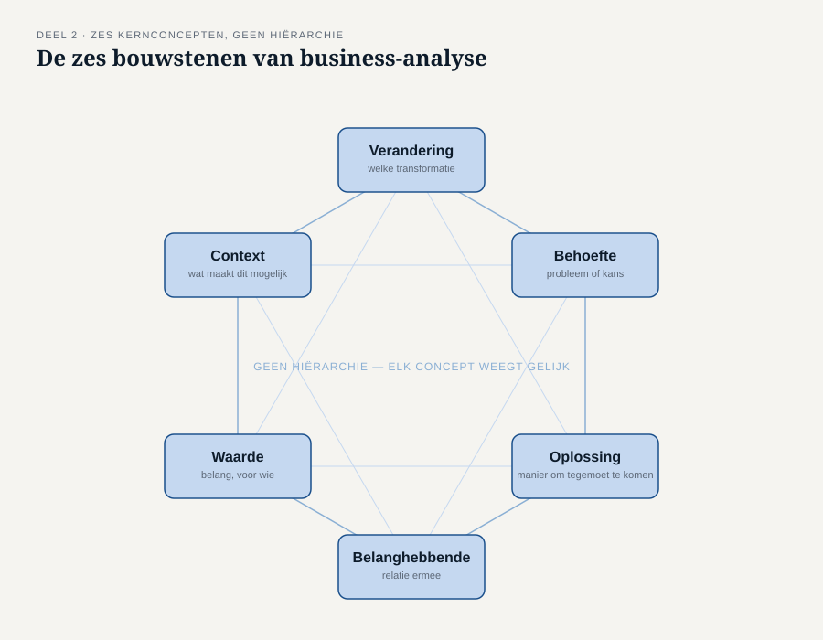

Deel 2 — Het denkraam: zes kernconcepten in evenwicht
Reader · Ductus-cursus Business-analyse · niveau 1 (fundament) · deel 2 van 30
2.1 Waar dit deel over gaat
In deel 1 kwam je een veld tegen dat je nog niet goed kon invullen: welk verschil. Om dat veld recht te doen heb je een denkraam nodig — een vaste set begrippen waarmee je elke veranderingssituatie kunt ontleden, ongeacht de sector, de omvang of de vorm van het werk.
Aan het eind van dit deel kun je:
- de zes kernconcepten van business-analyse benoemen en in eigen woorden uitleggen;
- laten zien hoe die zes concepten elkaar onderling nodig hebben;
- met het evenwichtsblad een situatie ontleden en vaststellen welk concept ontbreekt of te vaag is ingevuld;
- uitleggen waarom een claim over waarde zonder benoemde belanghebbende feitelijk niets zegt.
Dit deel sluit bevinding B2: het beoogde verschil is nooit benoemd.
2.2 De casus: Merel leest het projectvoorstel terug
Uit het casusdossier: de herstartgroep is gevormd, Merel begint met het dossier van WGP 2.0.
Merel legt het projectvoorstel van WGP 2.0 naast haar eigen veranderregel uit deel 1. Ze valt over een zin uit de doelstelling: “Meridiaan tilt haar dienstverlening naar een hoger niveau.”
Ze belt Ayla Demir, de informatieanalist die destijds aan WGP 2.0 werkte.
“Ik lees hier steeds over waarde — modern, klaar voor de toekomst, hoger niveau. Voor wie was dat eigenlijk waardevol?”
“Voor werkgevers, denk ik. Dat stond niet apart.”
“En wat was hun probleem dan precies?”
“Dat weet ik niet. Dat stond er ook niet apart in.”
Merel merkt iets op dat ze nog niet kan benoemen: er staat wél een oplossing en wél een claim over waarde, maar geen behoefte en geen belanghebbende om die waarde aan op te hangen. Dat gevoel — dat er iets ontbreekt zonder dat je meteen kunt zeggen wát — is precies waar dit deel een instrument voor geeft.
2.3 De zes kernconcepten
Elke veranderingssituatie laat zich beschrijven met dezelfde zes begrippen. Dat is de kern van dit deel: niet zes losse definities om te onthouden, maar één denkraam dat overal toepasbaar is — bij een pensioenprogramma net zo goed als bij een fusie, een wetswijziging of een verbouwing.
Verandering — een transformatie die met opzet wordt uitgevoerd, als reactie op een behoefte. Een verandering heeft altijd een vorm: een project, een programma, doorlopende verbetering. De veranderregel uit deel 1 beschrijft een verandering.
Behoefte — een probleem of een kans die aanleiding geeft om iets te doen. Een behoefte kan uitgesproken zijn (Ruud Kalsbeek meldt vier keer per week dezelfde klacht) of latent (niemand heeft het opgemerkt, maar de cijfers laten het zien).
Oplossing — een specifieke manier om aan een of meer behoeften tegemoet te komen. Belangrijk: een oplossing is altijd een antwoord op iets. Zonder benoemde behoefte is “oplossing” een woord zonder betekenis, hoe concreet de oplossing zelf ook is.
Belanghebbende — ieder die een relatie heeft met de verandering, de behoefte of de oplossing: wie er last van heeft, wie erover beslist, wie ermee moet werken, wie het betaalt. Eén persoon kan meerdere van die relaties tegelijk hebben.
Waarde — het belang of het nut van iets, voor een specifieke belanghebbende, in een specifieke situatie. Waarde bestaat niet op zichzelf. Zij bestaat pas op het moment dat je kunt zeggen: waardevol voor wíe.
Context — de omstandigheden waarbinnen dit alles zich afspeelt en die het beïnvloeden: de organisatiecultuur, de bestaande systemen, de regelgeving, de markt, de mensen die er al zijn. Context verandert mee met wat je doet, en beïnvloedt tegelijk wat mogelijk is.

Waarom dit geen rijtje is
Het is verleidelijk deze zes concepten te lezen als een checklist die je één voor één afvinkt. Dat is niet de bedoeling, en het is ook niet hoe ze werken. Ze zijn onderling afhankelijk: elk concept krijgt pas betekenis in relatie tot de andere vijf.
- Een oplossing zonder benoemde behoefte is een gok.
- Een behoefte zonder benoemde belanghebbende is een vermoeden.
- Waarde zonder benoemde belanghebbende is een loze uitspraak.
- Een verandering zonder benoemde context loopt vast op iets wat iedereen al wist, behalve degene die de verandering bedacht.
- Een belanghebbende zonder relatie tot een behoefte of oplossing hoort er waarschijnlijk niet bij, en zijn aanwezigheid op de lijst kost tijd die naar iemand anders had gemoeten.
Dat is de reden dat we dit een denkraam noemen en geen lijst: het is pas compleet als alle zes de begrippen op elkaar aansluiten voor dezelfde situatie.
2.4 Wat er misgaat als het denkraam uit balans is
Kijk terug naar het projectvoorstel van WGP 2.0. In de eigen woorden van het denkraam:
| Concept | Wat er stond |
|---|---|
| Verandering | Vervanging van het werkgeversportaal — expliciet, duidelijk |
| Oplossing | Hetzelfde: het nieuwe portaal — expliciet, te expliciet zelfs |
| Waarde | “Modern”, “gebruiksvriendelijk”, “toekomstbestendig” — genoemd, maar niet aan iemand gekoppeld |
| Belanghebbende | Niet apart benoemd; werkgevers worden terloops genoemd, Uitvoering en Klantenservice helemaal niet |
| Behoefte | Ontbreekt volledig |
| Context | Terloops: “dalende waardering” — geen cijfer, geen bron, geen vergelijking |
Vier van de zes vakjes zijn leeg, vaag of losstaand ingevuld. Twee vakjes — Verandering en Oplossing — zijn overvol ingevuld, tot op schermniveau. Dat scheve beeld ís bevinding B2: er werd uitvoerig over de oplossing gesproken en nauwelijks over de behoefte die haar zou moeten rechtvaardigen.
Dit patroon is zo herkenbaar dat het een naam verdient: de oplossing verdringt de rest van het denkraam. Zodra een oplossing eenmaal is uitgesproken, gaat alle aandacht daarheen, en de andere vijf concepten — vooral behoefte en belanghebbende — blijven onderbelicht. Het is een directe voortzetting van wat je in deel 1 leerde over probleem versus oplossing, nu toegepast op alle zes de concepten tegelijk.
2.5 De werkvorm: het evenwichtsblad
Het instrument van dit deel is het evenwichtsblad: een blad met zes vakken, één per kernconcept, met een vaste laatste stap die het verschil maakt.
Het blad
Zes vakken, in willekeurige volgorde in te vullen zodra je iets weet:
Verandering — welke transformatie speelt hier? Behoefte — welk probleem of welke kans ligt eraan ten grondslag? Oplossing — welke manier om daaraan tegemoet te komen ligt er, of wordt overwogen? Belanghebbende(n) — wie heeft er een relatie mee, en welke? Waarde — wat is het belang, en voor wie precies? Context — welke omstandigheden maken dit mogelijk of juist lastig?
En dan de stap die het verschil maakt:
Spanningstoets — welk vakje is leeg, terwijl een aanpalend vakje wél vol is? Welk vakje bevat een woord in plaats van een antwoord?
Waarom de spanningstoets het werk doet
Het invullen van de zes vakken is niet moeilijk — iedereen kan er iets in schrijven. De spanningstoets is waar de analyse plaatsvindt: je gaat op zoek naar de plekken waar het denkraam niet in evenwicht is, en dat zijn precies de plekken waar een project als WGP 2.0 kan ontsporen zonder dat iemand het tijdig merkt.
Drie herkenbare spanningen, telkens met het voorbeeld uit de casus:
- Oplossing vol, Behoefte leeg — het patroon van bevinding B1, nu zichtbaar gemaakt op het blad zelf.
- Waarde vol, Belanghebbende leeg — “modern” en “toekomstbestendig” zonder dat er staat voor wie. Dit is precies bevinding B2.
- Belanghebbende vol, Behoefte of Oplossing leeg — iemand staat op de lijst zonder dat duidelijk is waarom; vaak een teken dat er een belanghebbende is vergeten die er wél toe doet, en een verkeerde als plaatsvervanger is genomen. Bij WGP 2.0: de drie grote werkgevers stonden erbij, de vierduizend kleine niet.

Een ingevuld voorbeeld
Merels evenwichtsblad voor de herstart, na haar gesprek met Ayla:
| Vak | Inhoud |
|---|---|
| Verandering | Werkgevers met minder dan vijftig medewerkers voeren correcties zelf in |
| Behoefte | Correcties met terugwerkende kracht kunnen nu niet via het portaal; ze komen bij Klantenservice terecht |
| Oplossing | Nog niet gekozen — daar gaat deel 8 over |
| Belanghebbende | Kleine werkgevers (voeren in), Klantenservice werkgevers (nu belast), Uitvoering (controleert) |
| Waarde | Voor kleine werkgevers: geen telefoontje nodig. Voor Klantenservice: tijd voor andere vragen |
| Context | Bestaand portaal, bestaande controleprocedure bij Uitvoering, komende Wtp-transitie |
De spanningstoets levert hier iets belangrijks op: het vak Oplossing is leeg, en dat is juist goed. Op dit punt in het proces hoort er nog geen oplossing te staan — die komt pas na de behoefte-analyse in deel 6 en de afweging in deel 8. Een leeg vakje is niet altijd een fout; het is een fout zodra het vakje leeg is terwijl er al wél over wordt gesproken alsof het vaststaat. Dat onderscheid — een terecht leeg vakje versus een spanning — leer je door het blad vaker te gebruiken.
2.6 Terug naar de veranderregel
Met dit denkraam kun je het vijfde veld van de veranderregel uit deel 1 nu goed invullen. “Welk verschil” was daar een open veld; nu weet je dat het antwoord waarde voor een benoemde belanghebbende moet zijn, nooit waarde in het algemeen.
Vergelijk:
- Zwak: “zodat de dienstverlening verbetert” — waarde zonder belanghebbende, exact het WGP 2.0-patroon.
- Sterk: “zodat kleine werkgevers niet meer hoeven te bellen voor een correctie” — waarde, met naam en toenaam.
De twee werkvormen versterken elkaar: de veranderregel dwingt tot één scherpe zin, het evenwichtsblad dwingt tot volledigheid over de zes concepten die daarachter zitten. Vanaf deel 5 gebruik je ze naast elkaar.
2.7 Wat het examen hierover vraagt
Dit deel dekt activiteit 1.2 van domein 1: de zes kernconcepten beschrijven, uitleggen hoe ze samenhangen, en ze gebruiken om gestructureerd te denken. Verwacht examenvragen die:
- een korte situatieschets geven en vragen welk kernconcept ontbreekt of onderbelicht is;
- vragen om twee concepten met elkaar in verband te brengen (bijvoorbeeld: welke waarde hoort bij welke belanghebbende);
- een uitspraak voorleggen die klinkt als een van de zes concepten, maar het net niet is (een wens die klinkt als een behoefte, een kenmerk dat klinkt als context).
Let op de valkuil: op het examen wordt soms een concept genoemd zonder dat het woord er letterlijk bij staat. Herken het concept aan wat er beschreven wordt, niet aan het woord.
Begrippenlijst, vervolg
| Nederlands | Engels |
|---|---|
| kernconcept | core concept |
| denkraam | conceptual framework |
| in evenwicht / balans | in balance |
| latent (van een behoefte) | latent |
| gerealiseerd (van waarde) | realized |
| potentieel (van waarde) | potential |
2.8 Terug naar de casus
Bevinding B2 — het beoogde verschil is nooit benoemd — is nu preciezer te maken dan in de post-mortem zelf stond. Het probleem was niet dat er geen woorden voor waarde werden gebruikt; die woorden stonden er volop. Het probleem was dat waarde nooit aan een belanghebbende werd opgehangen, en dat behoefte helemaal ontbrak. Met het evenwichtsblad is dat in één oogopslag zichtbaar te maken — precies het gereedschap dat de stuurgroep in maand 1 had kunnen gebruiken om de vraag te stellen die niemand stelde.
Vooruit naar deel 3. Het denkraam ligt er nu. Maar een denkraam gebruik je pas goed als je ook weet vanuit welke houding je het toepast — en dat is precies waar het bij Ayla Demir aan schortte: zij had het instrument misschien wel gekend, maar niet de overtuiging dat het haar taak was om het te gebruiken. Deel 3 gaat over die houding.